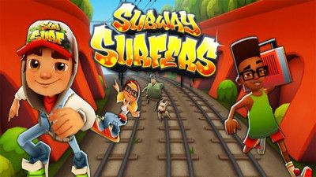

| SUBWAY SURFERS | |
Subway Surfers is a game where the player makes their character run until they lose. The game theme has been based on a world tour since the year 2013. The game is available on the iOS, Android and Windows phone operating systems. Subway Surfers claims to be the fourth most downloaded game of all time. In "Subway Surfers," players take on the role of the graffiti-tagging main protagonist Jake or one of his many friends. They run from the grumpy inspector and his dog through the subway systems of famous cities around the world while collecting coins and dodging oncoming trains. |
 |